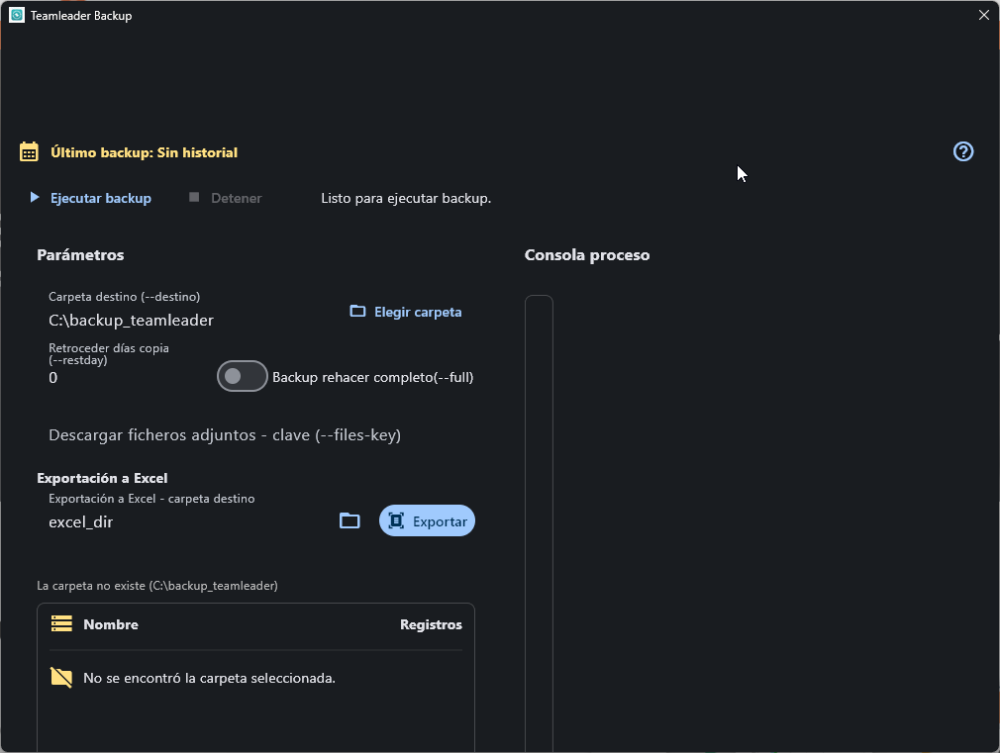

Utiliser Backup Teamleader depuis la console¶
Le mode console permet d'exécuter la sauvegarde avec des paramètres reproductibles. Ouvrez un terminal dans le dossier contenant backupTL.exe et vérifiez d'abord les options disponibles dans cette version.
Chemin rapide¶
.\backupTL.exe --help
.\backupTL.exe --silent --destino "C:\backup_teamleader"
La seconde commande exécute une sauvegarde sans sortie étendue et enregistre le résultat dans C:\backup_teamleader.

Testez avant d'automatiser
Exécutez la commande manuellement et vérifiezz le code de sortie, les messages et les fichiers générés avant de l'ajouter au planificateur de tâches ou à un autre processus.
Paramètres confirmés¶
| Paramètre | Action |
|---|---|
--gui |
Ouvre l'interface graphique (affiche la fenêtre principale avec le dossier de destination et le bouton Exécuter la sauvegarde). |
--destino PATH |
Définit le dossier de sauvegarde. |
--silent |
Réduit les informations affichées pendant l'exécution. |
--full |
Force une sauvegarde complète. |
--restday N |
Revoir les changements des N jours précédents. |
--lista |
Demande la liste des entités disponibles pour la sauvegarde. |
--enc |
Dévie l'exécution vers le convertisseur legacy : lit les fichiers .json du dossier relatif json et génère les fichiers .encrypted dans backup. N'exécute pas de sauvegarde Teamleader et n'utilise pas --destino pour ces chemins. |
--json VALUE |
Dévie l'exécution pour convertir les .encrypted de --destino vers le dossier relatif json, mais uniquement si VALUE correspond au Client Secret configuré. N'exécute pas de sauvegarde normale. |
--excel_dir PATH |
Déclaré pour compatibilité, mais le flux CLI actuel ne consomme pas ce paramètre. Ne change pas le dossier de conversion ni ne génère Excel. |
Conversion legacy et sécurité¶
Les options --enc et --json appartiennent à un flux legacy séparé de la sauvegarde :
--encconvertit JSON en fichiers chiffrés en utilisant les dossiers relatifs fixesjsonetbackup.--json VALUEcompareVALUEau Client Secret et, si correspondent, convertit les.encryptedde--destinoen JSON.- Un mot de passe incorrect annule la conversion, mais le processus actuel peut se terminer avec le code de sortie
0; vérifiez les fichiers générés et ne vous fiez pas uniquement au code de sortie.
N'exposez pas le Client Secret en ligne de commande
La valeur --json peut rester dans l'historique du terminal, le planificateur de tâches et la liste des processus. N'utilisez pas ce paramètre sur des machines partagées ou dans des automatisations. Pour JSON, préférez l'action Exporter de l'interface graphique jusqu'à ce qu'un mécanisme CLI existe qui ne reçoive pas de secrets comme arguments.
--excel_dir n'est pas opérationnel
Bien qu'il apparaisse dans --help, l'orchestration CLI ne lit pas ce paramètre. Ne l'incluez pas dans des scripts et ne vous attendez pas à ce qu'il sélectionne un dossier de sortie.
Exemples¶
Sauvegarde complète¶
.\backupTL.exe --silent --full --destino "D:\Backups\Teamleader"
Revoir les trois derniers jours¶
.\backupTL.exe --silent --restday 3 --destino "D:\Backups\Teamleader"
Vérifier l'exécution¶
- Vérifiez le code de sortie du processus.
- Vérifiez que le dossier contient des fichiers
.encryptedmis à jour. - Conservez la sortie et le journal lorsque l'exécution fait partie d'un processus audité.
- N'incluez pas d'identifiants directement dans des scripts, noms de fichiers ou arguments visibles.
Étape suivante¶
Voir Verifier le resultat ou aller au Depannage si le processus se termine par une erreur.
Enviar incidencia